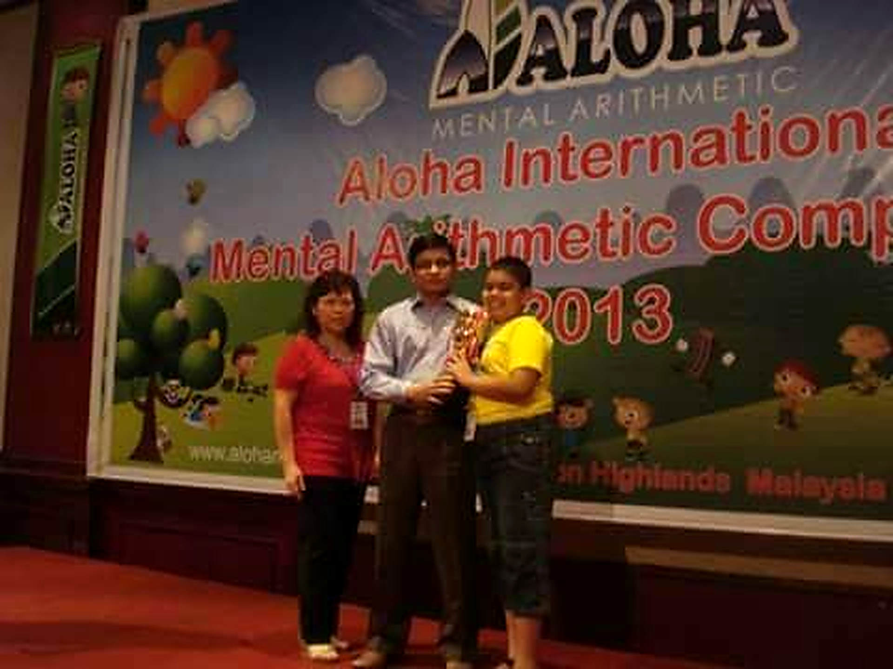

International Grand Champion
Group J · Malaysia · May 2013
Achieved Grand Champion at the ALOHA International Mental Arithmetic Competition. Also earned Level 3 Winner recognition in the national competitions in 2012 and 2013.
Completed all eight ALOHA Mental Arithmetic program levels, with 100/100 in seven levels and 90/100 in Level 4.